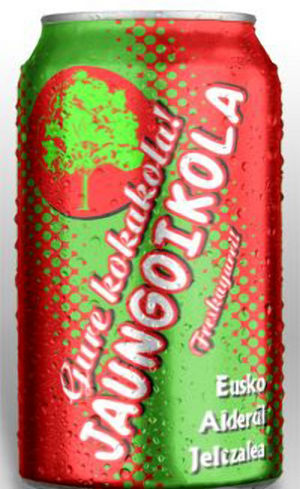
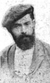

Sabino Arana
 De: La Frikipedia, la enciclopedia extremadamente seria.
De: La Frikipedia, la enciclopedia extremadamente seria.
«No puedo ni ver a ese tío, siempre me ganaba al mus»
~ Pío Baroja sobre Sabino Arana
«Un pico y una pala...»
~ Ramiro de Maeztu sobre Sabino Arana
«FAP FAP FAP FAP FAP FAP FAP FAP FAP FAP FAP FAP FAP FAP»
~ Xabier Arzalluz
 Jaungoikola, la bebida favorita de Arana
Sabino Policarpo Arana Goiri, (en euskera Sabino Polikarpo Arana Goiri) fue un benefactor de la humanidad nacido en Vizcaya . A menudo es llamado el fundador del nacionalismo vasco, aunque el prefería que lo llamasen Sabinín.
Biografía
 Sabino Arana husmeando el aire en busca de maketos
Sabino Arana riendo a carcajadas
Sabino Arana haciendo señas al mus
Sabino Arana husmeando el aire en busca de maketos otra vez
Sabino Arana estornudando
Sabino Arana deslumbrado por el sol
El sr. Arana nace en algún remoto lugar de Euskadi en algún momento del siglo XIX. Se dice que nació con barba y txapela, aunque lo de la barba no ha podido ser confirmado.
A los 7 años crea la ikurriña mientras dibujaba en clase.
En edad de merecer husmea por los archivos de las parroquias en busca de una mujer que se adecue a sus criterios: Una mujer con 126 apellidos de resonancias éuscaras. Lo que no llega a ver es el lugar de nacimiento, por lo que nunca llegó a descubrir que su churri era de Majadahonda aunque toda su familia fuese vasca.
Años mas tarde se exilia al Iparralde por motivos políticos aunque en realidad era porque el médico le había recetado cambiar de aires para curar unas purgaciones de caballo que habían resistido cualquier intento de cura.
Finalmente vuelve al Hegoalde para morir de Síndrome de Van D'arra.
Grandes aportes para la humanidad
Sabinín es célebre por sus grandes dádivas a la humanidad (Léase a los vizcaínos):
- La Ikurriña: Bandera del pueblo vasco y excelente papel de regalo. A juzgar por la combinación de colores, su sangre vasca estaba contaminada con sangre de habitantes de Daltonia
- La palabra maketo: Todo el mundo sabe que el euskera no es un idioma rico en insultos. Gracias a este hombre ahora se puede insultar en vasco a los no-vascos sin recurrir al popular "txakurra"
- El llevar la txapela de lado: Una innovación estilística semejante a la introducción del pantalón de paramecios en España por parte de Jaime de Marichalar . Todo un acierto
Otros inventos
Sabino Arana creó una importante marca de cola en Euskadi: La Jaungoikola. Como él mismo decía "Jaungoikola ta Lege Zaharra", en referencia a una marca de Txakoli muy famosa en aquella época,Sabino Arana es a menudo nombrado como el inventor del kalimotxo.
También inventó la piedra pómez y son frecuentes sus arengas a favor del progreso, la alianza de civilizaciones, y la separación Iglesia-Estado. Fundó el PNV aunque eso es algo que carece de total relevancia
Frases célebres
- "Nosotros, los vascos, evitemos el mortal contagio, mantengamos firme la fe de nuestros antepasados y la seria religiosidad que nos distingue, y purifiquemos nuestras costumbres, antes tan sanas y ejemplares, hoy tan infestadas y a punto de corromperse por la influencia de los venidos de fuera". Abogando por una cuarentena en la dura epidemia de tifus de 1899
- "Sabida es de sobra la inhumana crueldad con que los blancos han tratado siempre y dondequiera a las razas de color". Manifiesto contra la segregación racial
Badakizu...?
(Sabías que...)
- ...Sabinín odiaba el coleccionismo de maquetas?
- ...No sabía hablar euskera y le pedía a un amigo ermuarra que le preparase los discursos?
- ...Jonarano es familia lejana?
- ...Ibarretxe también?
- ...Cualquier otro vasco también?
- ...En Euskadi hay mucha consanguineidad?
- ...Se cayó desde el Árbol de Gernika en una marmita de txakolí cuando era pequeño?
- ...Se dejo barba porque era belfo, mellado y tenía prognatismo?
- ...Consiguió follar, y además con una vasca, siendo el primer vasco en cumplir semejante hazaña
- ...Fue encarcelado y tocaba la alboka en prisión como los yankis tocan la armónica?
- ...Por donde Sabino pisaba no volvía a crecer la hierba, pero si robles?
Frikipedia 2005-2016, Licencia
GFDL 1.2 - Extraído por FrikiLeaks